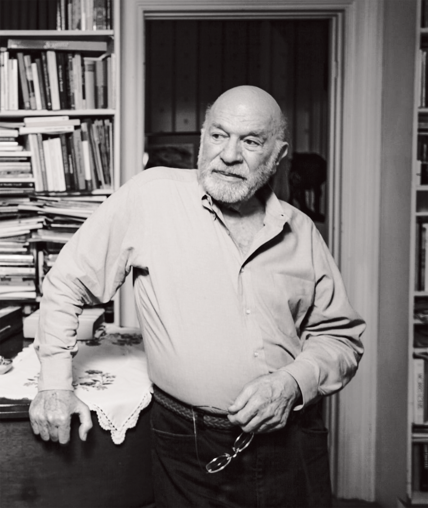

The New School Philosophy Department
2026-2027 Arendt/Schürmann Symposium
on Stanley Cavell

|
October 2026 Friday 30th & Saturday 31st 11 AM-6 PM |
Wollman Hall 65 W 11th St. Eugene Lange Bldg. 5th Floor |
On Friday, October 30, and Saturday, October 31, the Philosophy Department at the New School for Social Research will host a two-day conference devoted to the work of Stanley Cavell. The conference will focus on Cavell’s writings on aesthetics, with particular attention to the role that skepticism about other minds plays in his interpretation of art.
To attend, register here.
Schedule
Fri, Oct 30
| 11:00 AM | Zed Adams (NSSR) Opening remarks |
| Francey Russell
(Barnard College and Columbia University)
“Something You Can’t Get At”: Bergman, Cavell, and the Life of the Mind |
|
| 12:45 PM | Lunch |
| 2:00 PM | Benjamin Y. Goff
(Ph.D. Candidate, King's College London)
The Avoidance of Marriage: Skepticism’s Aesthetics in The Drama (2026) |
| 3:30 PM | Coffee hour |
| 4:30 PM | Alice Crary (NSSR)
Democratic Defiance: With Stanley Cavell as a Guide |
Sat, Oct 31
| 11:00 AM | Jay Bernstein (NSSR) Opening remarks |
| Byron Davies (University of Murcia)
Cavell, Colonialism, and Mexican Cinema |
|
| 12:45 PM | Lunch |
| 2:00 PM | V. Joshua Adams (University of Louisville)
Cavell, Skepticism, and the Lyric |
| 3:30 PM | Coffee hour |
| 4:30 PM | Paola Marrati (Johns Hopkins University)
Cavell and Baldwin: Knowledge of the Self and Knowledge of Reality |
Abstracts
Cavell, Colonialism, and Mexican Cinema
Byron Davies (University of Murcia)
This presentation will offer some proposals for what would be required for a genuine encounter between Stanley Cavell and Latin American cinema, with attention to questions of separateness, acknowledgment, and taboo in both classic Mexican cinema and its later proxies, particularly director Arturo Ripstein. The focus will be on how much of a Cavellian reading of these traditions (mostly neglected by Cavellians) is intelligible and how much it genuinely is not, a question that turns on different framings of the connections between modernity and acknowledgement. For Cavell, certain modern and progressive (later transformed into “perfectionist”) myths of the twentieth-century U.S. were well-suited to Hollywood remarriage comedies, allowing mutual acknowledgement to be left just up to the couple. And yet in the Mexican films in question, the dialectic of incorporation and separateness central to them is inflected by what authors like Néstor García Canclini have analyzed as the uneven and hybrid process of modernity and modernization characteristic of colonialism, including U.S. neocolonialism, in Latin America. Thus, even when in 1991 Ripstein remakes the vital 1934 melodrama La mujer del puerto (The Woman of the Port, dir. Arcady Boytler and Raphael J. Sevilla) as a kind of remarriage comedy—with seemingly outrageous literalizations of Cavell’s notions of the screen as taboo-setting barrier and of acknowledgment as movement away from “incestuous privacy”— the meanings of “remarriage,” “taboo,” and “privacy” in this case are, and have to be, entirely different. We therefore need to get into view at once why seeming paradigms of Cavell’s genres in Mexican cinema employ only superficially similar tropes, and also how Cavell’s writing on what it is to derive some genres from others (here, a “kind” of remarriage comedy from a “kind” of melodrama of the unknown woman) genuinely deepens proposals, like film scholar Andrea Noble’s, about Ripstein’s “‘dismodern’ irony.” This presentation belongs to a larger agenda—with the hope of evoking something of the philosopher Enrique Dussel—of considering the consequences of treating colonialism and 1492, rather than principally Descartes and the New Science (as Cavell can be read as framing things), as foundational for modern skepticism about others.
"Something You Can’t Get At”: Bergman, Cavell, and the Life of the Mind
Francey Russell (Barnard College and Columbia University)
This paper considers Cavell’s philosophy of psychoanalysis—the study of our inner “other mind”—through some issues in aesthetics. In a famous and enigmatic paragraph, Cavell writes that psychoanalysis is where “the human psyche as such, the idea that there is a life of the mind, hence a death, receives its proof. It receives its proof of its existence in the only form in which that psyche can (any longer) believe it, namely as essentially unknown to itself, say unconscious.” I elaborate the idea that the mind can receive and needs proof of itself as unknown to itself in connection with what I call aesthetic experiences of opacity. These are experiences of not understanding a work of art, yet where we find this to be satisfying and salutary rather than frustrating and disvaluable. While it can seem a truism that art is characterized by a dimension of palpable opacity and that this is part of why we care about it, it is not easy to account for this. I propose that aesthetic experiences of opacity are one way that the mind can receive “proof of itself as unknown to itself,” drawing on Cavell, Susan Sontag, and Ingmar Bergman.
Cavell and Baldwin: Knowledge of the Self and Knowledge of Reality
Paola Marrati (Johns Hopkins University)
In this paper I would like to discuss the connection Stanley Cavell and James Baldwin establish between the knowledge of the self and the knowledge of reality in its philosophical, ethical, and political dimensions.